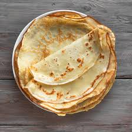

Crêpes

Description
With this simple recipe, you'll learn how to make amazing crêpes for that wonderfully French romantic breakfast or brunch. Paris style!
Follow rubor's cooking show for more easy recipes that will level up your cooking!
Ingredients
(For 2 people)
- Eggs - 1
- Milk - 250ml
- Flour - 100g
- Vanilla sugar - 4g
Steps
- Thoroughly mix all ingredients in a bowl until you've got a smooth batter without chunks.
- Warm a pan on medium heat until hot and ladle in the crêpe batter. Twirl the pan around until it's fully covered in batter.
- When the top-side of the crêpe is dry (approximately after 4 minutes), gently slide a spatula underneath the crêpe and flip it in a smooth motion.
- Wait 2 more minutes for the other side of the crêpe to finish baking and serve with your preferred topping.
Back to homepage